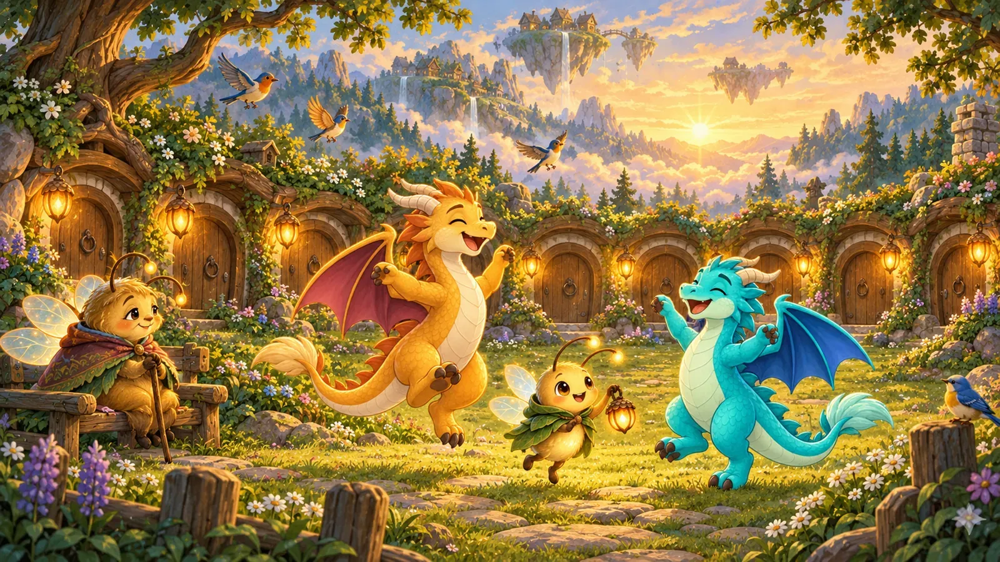
Ett äventyr i Himlaskären
Pyre och NosGlödvägen
Lyktorna i Himlaskären har slocknat. Flyg på varm luft, blås liv i elden och tänd ljuset igen, ensam eller tillsammans med någon du tycker om.

”Sitt ner, lilla vän, så ska jag berätta. Långt ut i Himlaskären, där öarna svävar över molnen, brann sju lyktor. Så länge de lyste hittade alla hem. En kväll slocknade de, en efter en. Nu ska två små drakar tända dem igen.”
Gammelmor Glimma, som berättar sagan
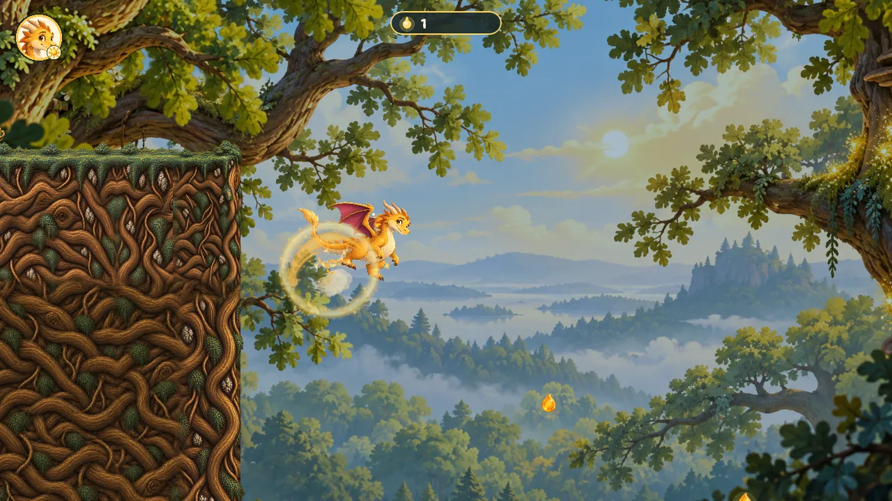
Flyg på värmen
Höjd är bränsle
Drakarnas vingar räcker inte långt. Men värm en glödskål med din eld, så lyfter luften dig. Den som tar sig högt kan sväva långt, och den som dyker får fart.
Det känns som att flyga på riktigt, men det räcker med tre knappar: flyg, eld och svep. Små händer hittar dem direkt.
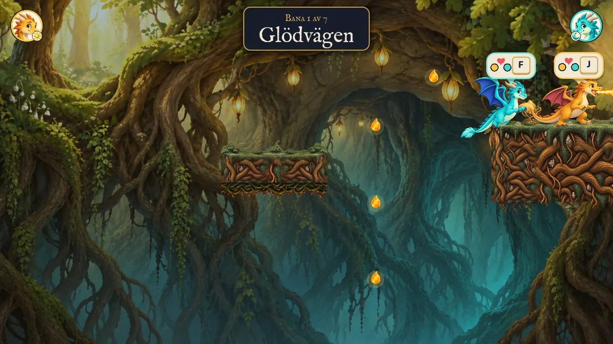
Tillsammans
Två kan mer än en
Spela ensam, eller två på samma skärm med var sin drake. Den som är före kan värma luften åt den som är efter, och den som halkar efter flyger ikapp av sig själv.
Ett barn och en vuxen kan spela ihop utan att någon behöver vänta på den andra. Och när ni tänder en lykta tillsammans lyser den lite längre.
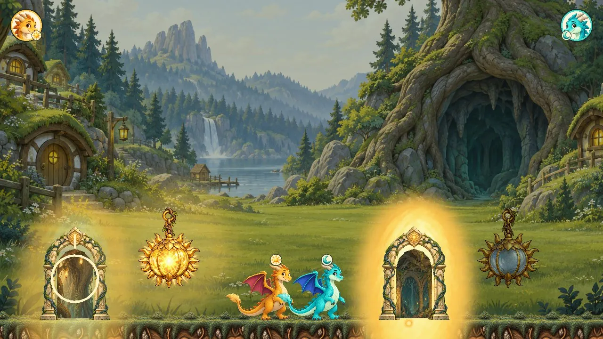
Sju banor och ett hem
Ljuset kommer hem
Rotgångar, kalla vindar, ekollonkronor och en klocka som andas storm. Varje lykta ni tänder flyger hem och lyser upp Lyktgläntan, och grannarna vaknar en efter en.
Hemmet växer med er. Efter varje äventyr finns något nytt att upptäcka där.
Väktarna
Ingen här är ond
Väktarna vid lyktorna är bara rädda, ensamma eller har glömt. Den som lyssnar och värmer får en vän.
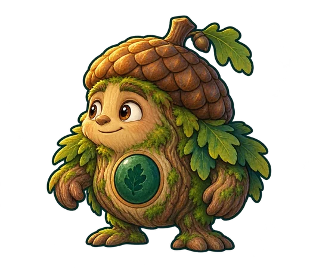
Ekollonväktaren
Han blev tjurig för att ingen kom på så länge. Han slår hårt i marken, men tre varma eldstötar i hjärtat gör honom till vän.
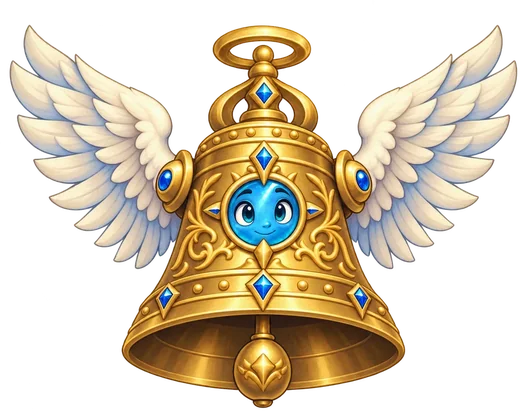
Stormklockan
Förr ringde den in varje storm och varje lugn. Nu blåser den stormarna själv för att bli hörd. Vänta på lugnet och ge den värme.
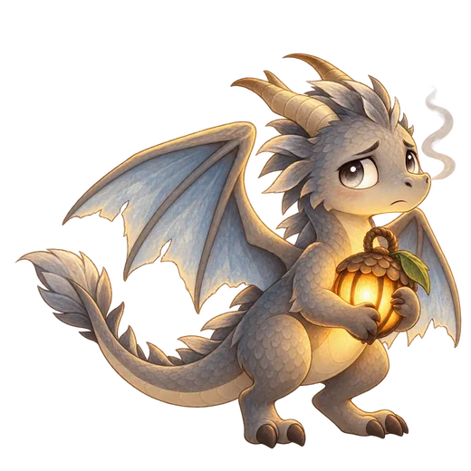
Askan
En grå drake vars eld inte värmer. Han samlar lyktor, för han fryser. Vem han är får ni veta när gryningen kommer.
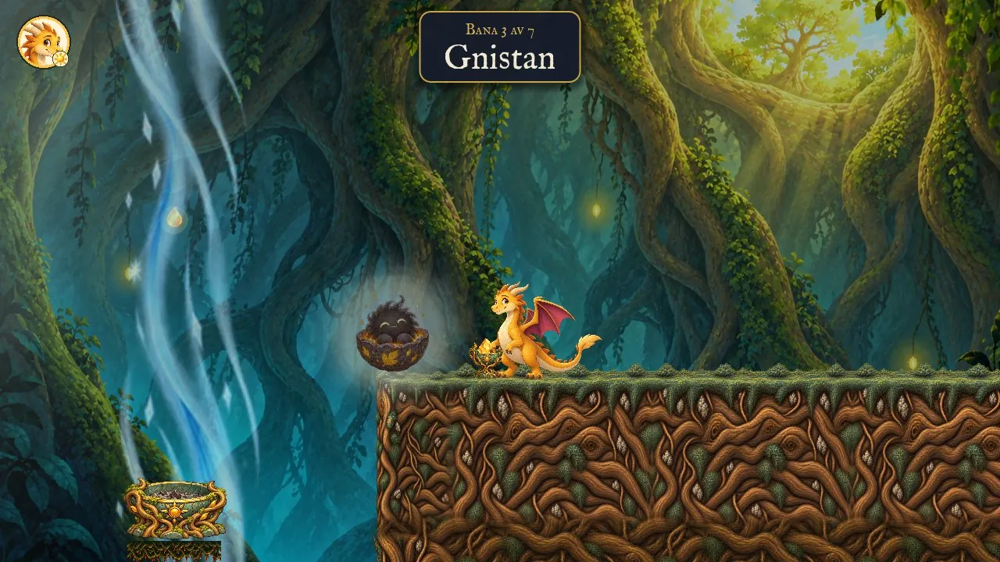
Omtanke
Vänner att rädda
Längs vägen sitter små varelser som har frusit fast. Värm dem, så följer de med hem och flyttar in i gläntan. Vännerna kommer från vårt andra spel, Draklekar, så den som har träffat dem där känner igen dem.
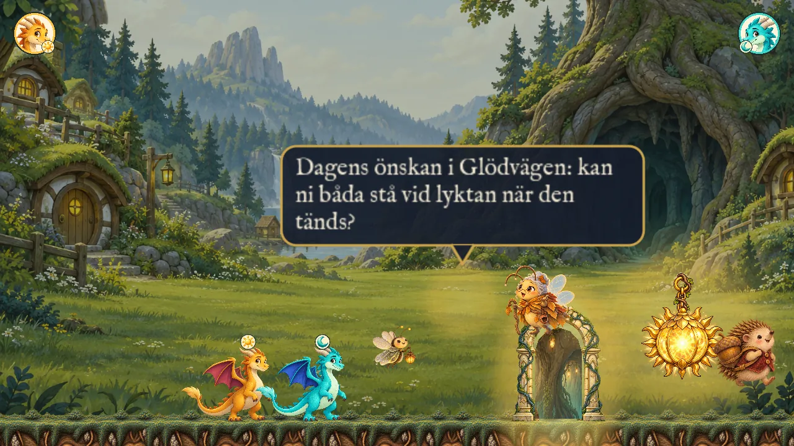
Varje dag lite nytt
Dagens önskan
Glimma har en liten önskan till er varje dag: stå tillsammans vid lyktan när den tänds, tända alla skålar eller hitta den gömda stjärnan. Inget måste, allt är en inbjudan.
Om ni vill kan ni blåsa i telefonen så sprutar draken eld. Bara ljudnivån läses, ingenting spelas in.
Bilder ur spelet
Målat för hand
Varje skog, grotta och himmel är målad i gouache-stil. Så här ser det ut när ni spelar.
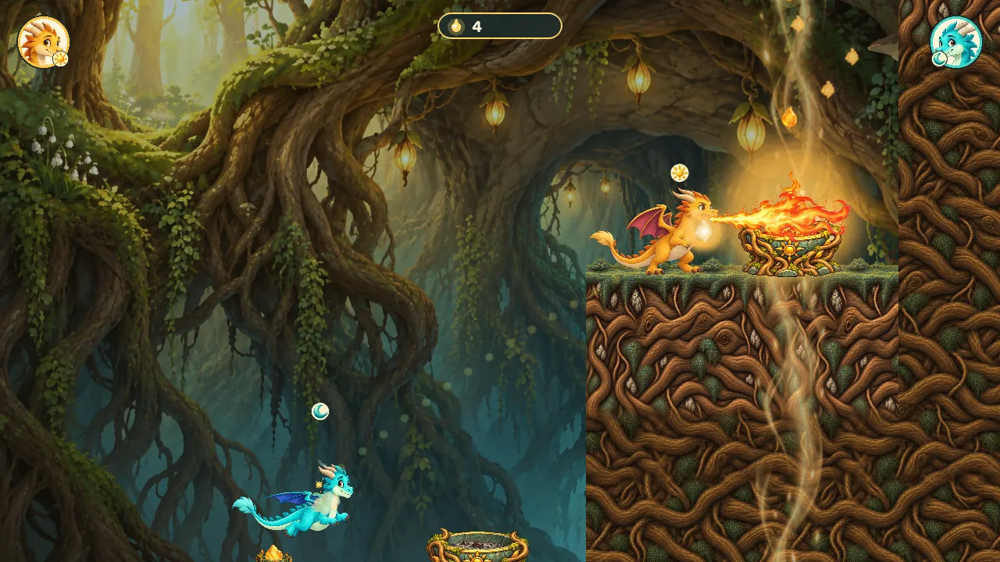
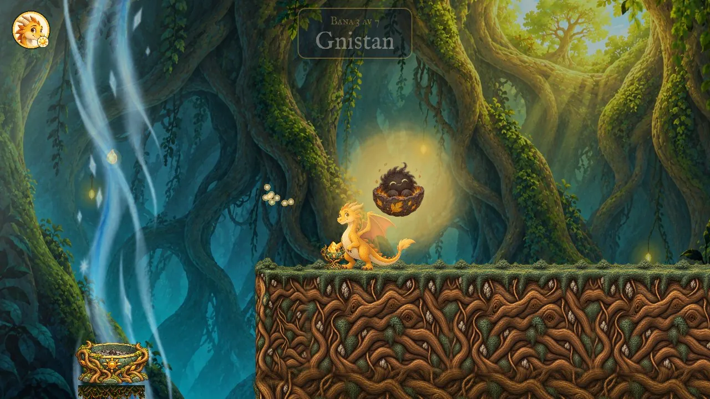
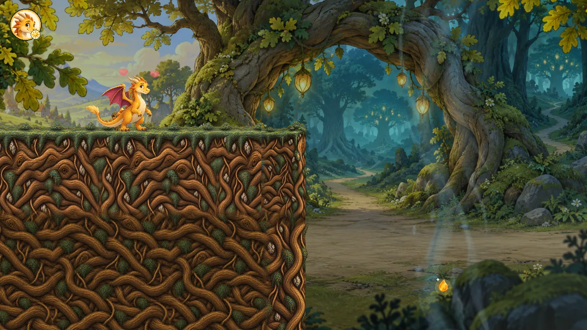
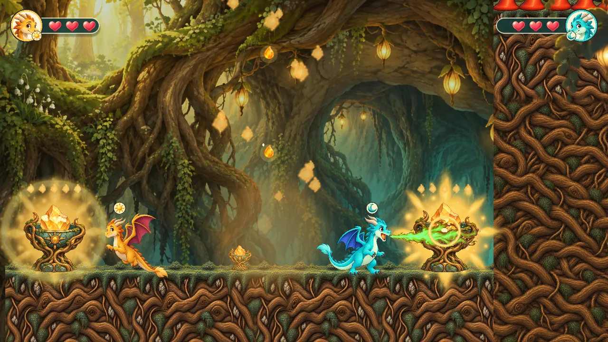
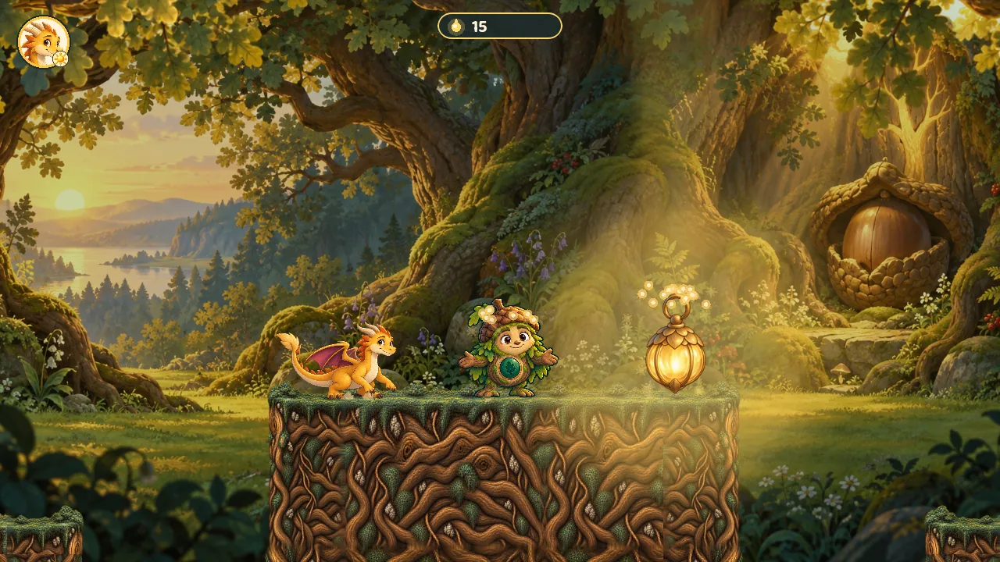
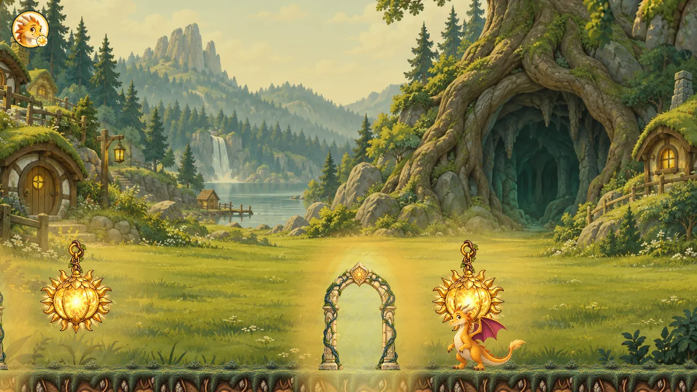
För dig som vuxen
Tryggt att ge bort
Målat för hand, berättat på svenska, gjort för barn från fem år och vuxna som vill spela med.
- Ingen reklam, inga köpAllt finns i spelet från början. Inga kassor, inga lådor.
- Det går inte att förloraDen som faller får en puff tillbaka. Ingen tidspress.
- Data samlas inte inInga konton och ingen analys. Spelet skickar ingenting över internet.
- Hjälp när det behövsLysflugan Luma visar en gång hur man gör, och Alltid flyga gör det lättare för små händer.
- Pekskärm, tangentbord och handkontrollTvå handkontroller för två spelare.
- Lagom långa stunderEn bana tar en stund, inte en kväll. Spelet sparar av sig självt.